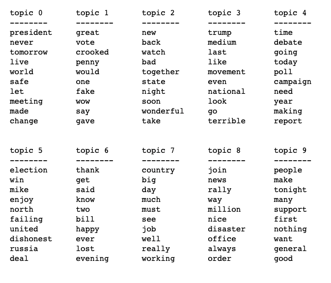

Data Explore
Data Preview for Hillary and Trump Tweets(LDA topic model)
Hillary LDA

Trump LDA
LDA topic Model selects 10 related words as a topic. And we can guess the topic meaning through 10 words. Hillary used many vocabularies with strong action and words related to time. All of them are about family, time, action, vote. It's an interesting work but it's not out of expectation. Surprisingly, Trump uses a lot of words that play up the moment of crisis of America such as Fail, Lose, Disaster. Both of the candidates are good at motivating voters to vote by rendering a sense of Crisis
Data Preview for Hillary and Trump Tweets(Word cloud)
Hillary Wordcloud

Trump Wordcloud

We can find that Trump has more confidence in winning the election, that's interesting!